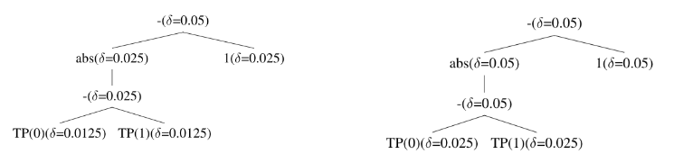
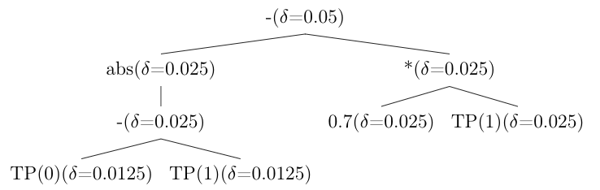
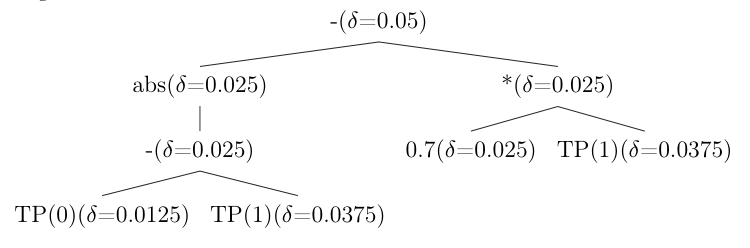

Variants¶
The codebase allows you to choose the variant for tuning and experimenting with the framework.
Basic Seldonian¶
To begin with, we implemented vanilla Seldonian algorithm to classify the datapoint into 2 groups with difference in true positives as the fairness constraint.
To use this mode, you need to add CLI parameter base as:
python main.py base
Improvements to confidence interval¶
In the candidate selection process, we used Hoeffding inequality confidence interval as follows-
Instead, this interval can be improved by using a separate values for - a.) error in candidate estimate and b.) confidence interval in safety set as follows-
This will specifically be helpful in cases where the difference between the sizes of the 2 data splits is huge.
To use this mode, you need to add CLI parameter mod as:
python main.py mod
Improvement in bound propagation around constant values¶
As constants have fixed value, there is no need to wrap a confidence interval around them. Thus, the \(\delta\) value can directly go to other variable child and need not be split equally into half in case of binary operator when the other child is a constant. The figures below show naive and improved implementation of bound propagation in case of constant value of a node of the same tree respectively.
To use this mode, you need to add CLI parameter const as:
python main.py const
Improvement in bound propagation from union bound¶
A user may defined the fairness constraint in such a way that a particular element appears multiple times in the same tree. Instead of treating all those entities as independent elements, we can combine all the elements together union bound and then use the final value of \(\delta\). This will theoretically improve the bound and give us better accuracy and more valid solutions.
Example: Suppose we have A appearing 3 times with \(\delta/2\), \(\delta/4\) and \(\delta/8\). We can simply take the
and find the confidence interval using that \(\delta\). The figures below show the naive and improved implement using this functionality respectively.
 To use this mode, you need to add CLI parameter bound as:
python main.py bound
Combining all of the above optimizations¶
This can be done by using the opt mode as:
python main.py opt
Optimization with Lagrangian/KKT¶
To use Lagrangian/KKT technique to optimise the objective function to get candidate solution, several additional modification are done:
Objective function: The implementation to find the candidate solution and setting the value of the objective function (which is minimized) is changed to the following-
Value of \(\mu\) : We calculate the value of \(\mu\) as
which must be positive to support the inequality of the fairness constraint and thus, in case the value is negative, then, we hard-code it to some positive value (say, 1).
Change prediction to continuous function: Classification is essentially a step function (0/1 in case of binary classifier as in this case). Thus, instead of getting a label, we change the function to give the probability of getting a label instead of exact label value. This helps us find the derivative of the function easily. This change must be made by the user when he/she changes the predict function for their use-case.
2-player approach to solve KKT: One of the ways to solve KKT optimization problem is to use a 2-player approach where we fix a value of \(\mu\) and then optimize the function w.r.t. \(\theta\) and then , we fix \(\theta\) and optimize the function w.r.t. \(\mu\). This goes on until we converge to some value or exceed a specific number of iterations. Instead of doing a 2-player approach, to fasten the optimization process, we did one run of this by using a single value of \(\mu\), fetched from derivative of log-loss divided by derivative of fairness constraint with the initial \(\theta\) values and optimizing the Lagrangian value using Powell optimizer.